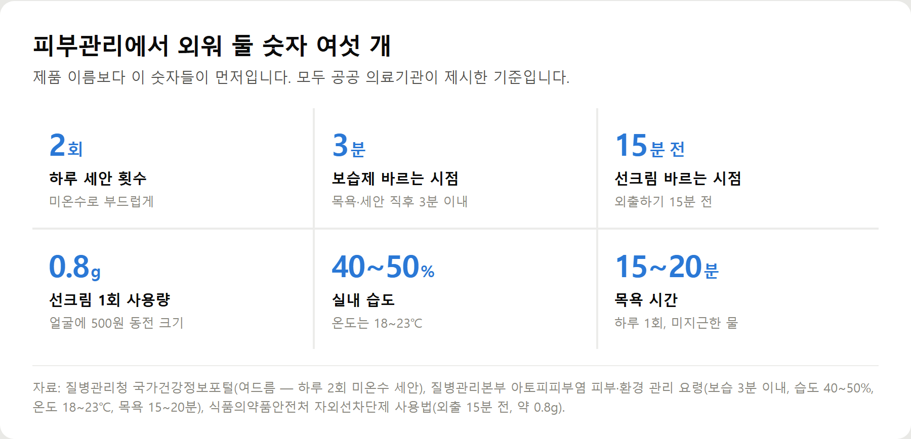

<meta charset="utf-8">
<title>피부관리 순서와 기준 숫자 요약 — 나의 투자 그리고 행복한 여행</title>
<meta name="description" content="피부관리법과 순서를 식약처·질병관리청 기준으로 정리했습니다. 아침 3단계, 저녁 3단계, 선크림 1회 사용량 0.8g, 실내 습도 40~50%.">
<meta name="viewport" content="width=device-width, initial-scale=1">
<link rel="canonical" href="https://worldtraveler1.tistory.com/108">
<link rel="preconnect" href="https://fonts.googleapis.com">
<link rel="preconnect" href="https://fonts.gstatic.com" crossorigin>
<link rel="stylesheet" href="https://fonts.googleapis.com/css2?family=Hahmlet:wght@400;600;800&family=IBM+Plex+Mono:wght@400;500&family=IBM+Plex+Sans+KR:wght@300;400;500;600&display=swap">

<style>
  :root{
    --paper:#F2EEE6;--surface:#FAF8F3;--surface-2:#E7E1D5;
    --ink:#191510;--ink-2:#4A4235;--ink-3:#7D7364;
    --line:#D6CEBF;--line-soft:#E4DDD0;--accent:#B06A15;--accent-bright:#C2761A;
    --up:#E5484D;--down:#3B82F6;
    --f-display:"Hahmlet",'Nanum Myeongjo',"Apple SD Gothic Neo",serif;
    --f-body:"IBM Plex Sans KR","Apple SD Gothic Neo","Malgun Gothic",sans-serif;
    --f-mono:"IBM Plex Mono","SFMono-Regular",Consolas,monospace;
    --pad:clamp(20px,5vw,64px);
  }
  @media (prefers-color-scheme:dark){
    :root:not([data-theme="light"]){
      --paper:#0B1120;--surface:#121A2C;--surface-2:#1A2439;
      --ink:#E9EEF7;--ink-2:#A9B5C9;--ink-3:#72809A;
      --line:#26314A;--line-soft:#1D2739;--accent:#E8A33D;--accent-bright:#F0B45C;
    }
  }
  *{box-sizing:border-box;}
  body{margin:0;background:var(--paper);color:var(--ink);font-family:var(--f-body);
    font-weight:300;font-size:1rem;line-height:1.75;-webkit-font-smoothing:antialiased;}
  a{color:inherit;}
  img{max-width:100%;height:auto;}
  .wrap{max-width:760px;margin:0 auto;padding-inline:var(--pad);}
  .nav{position:sticky;top:0;z-index:20;background:color-mix(in srgb,var(--paper) 88%,transparent);
    backdrop-filter:saturate(180%) blur(12px);border-bottom:1px solid var(--line);}
  .nav-in{display:flex;align-items:center;justify-content:space-between;height:58px;}
  .brand{font-family:var(--f-display);font-weight:600;font-size:1rem;letter-spacing:-.02em;text-decoration:none;}
  .back{font-family:var(--f-mono);font-size:.72rem;color:var(--ink-3);text-decoration:none;}
  .article{padding-block:clamp(40px,7vw,72px) clamp(56px,9vw,96px);}
  .eyebrow{font-family:var(--f-mono);font-size:.68rem;letter-spacing:.16em;text-transform:uppercase;
    color:var(--accent);margin:0 0 14px;}
  h1{font-family:var(--f-display);font-weight:800;font-size:clamp(1.6rem,4.4vw,2.3rem);
    line-height:1.3;letter-spacing:-.03em;margin:0 0 16px;}
  .byline{font-family:var(--f-mono);font-size:.72rem;color:var(--ink-3);
    padding-bottom:24px;border-bottom:1px solid var(--line);margin-bottom:32px;}
  h2{font-family:var(--f-display);font-weight:600;font-size:1.25rem;letter-spacing:-.02em;margin:42px 0 14px;}
  h3{font-family:var(--f-display);font-weight:600;font-size:1.05rem;letter-spacing:-.02em;
    margin:30px 0 10px;padding-top:14px;border-top:1px solid var(--line-soft);}
  h3 .code{font-family:var(--f-mono);font-size:.7rem;font-weight:400;color:var(--ink-3);margin-left:6px;}
  p{margin:0 0 18px;color:var(--ink-2);}
  ul.checks{margin:0 0 18px;padding-left:20px;color:var(--ink-2);}
  ul.checks li{margin-bottom:8px;font-size:.94rem;}
  table{width:100%;border-collapse:collapse;font-size:.88rem;margin-bottom:8px;}
  th{font-family:var(--f-mono);font-size:.66rem;letter-spacing:.06em;text-transform:uppercase;
    color:var(--ink-3);text-align:right;padding:8px 6px;border-bottom:1px solid var(--line);}
  th:first-child{text-align:left;}
  td{padding:10px 6px;border-bottom:1px solid var(--line-soft);color:var(--ink-2);}
  td.num{font-family:var(--f-mono);text-align:right;font-variant-numeric:tabular-nums;}
  td.up{color:var(--up);} td.down{color:var(--down);}
  .scroll{overflow-x:auto;}
  figure{margin:22px 0;}
  figure img{display:block;border-radius:3px;background:var(--surface-2);}
  figcaption{margin-top:8px;font-family:var(--f-mono);font-size:.68rem;color:var(--ink-3);text-align:center;}
  .note{margin-top:34px;padding:16px 18px;border-left:3px solid var(--accent);
    background:var(--surface);border-radius:0 3px 3px 0;}
  .note p{margin:0;font-size:.85rem;color:var(--ink-3);}
  .foot{border-top:1px solid var(--line);background:var(--surface);padding-block:30px 38px;}
  .foot p{margin:0;font-size:.8rem;color:var(--ink-3);}
</style>

<nav class="nav">
  <div class="wrap nav-in">
    <a class="brand" href="../index.html">나의 투자 그리고 행복한 여행</a>
    <a class="back" href="../index.html#stocks">← 시황으로</a>
  </div>
</nav>

<main class="wrap article">
  <p class="eyebrow">Market</p>
  <h1>피부관리 순서와 기준 숫자 요약</h1>
  <p class="byline">건강 · 2026-09-22 기준</p>

  <p>한 줄 요약: 피부관리는 덜 씻고, 3분 안에 덮고, 매일 가리는 세 가지로 좁혀집니다.</p>
  <p>2026년 9월 22일에 식약처·질병관리청·질병관리본부·서울아산병원·서울대병원 자료로 정리한 기록입니다.</p>
  <h2>핵심만 — 숫자 여섯 개</h2>
  <ul class="checks">
    <li>세안 하루 2회, 미온수 (질병관리청 국가건강정보포털)</li>
    <li>보습은 씻은 뒤 3분 이내 (질병관리본부 아토피 관리 요령)</li>
    <li>선크림은 외출 15분 전 (식품의약품안전처)</li>
    <li>선크림 1회 사용량 얼굴에 약 0.8g — 면적 371~419㎠ × 1㎠당 2mg</li>
    <li>실내 습도 40~50%, 온도 18~23℃</li>
    <li>목욕 하루 1회 15~20분, 미지근한 물</li>
  </ul>
  <figure><figcaption>세안·보습·자외선 차단·습도·목욕 기준 숫자 (질병관리청·질병관리본부·식약처)</figcaption></figure>
  <h2>40대 이후 방향이 바뀌는 이유</h2>
  <p>피부는 30세 초반부터 두께가 얇아지고 탄력이 떨어집니다. 내인성 노화 요인에 피지 분비 감소와 수분 감소가 포함됩니다.</p>
  <p>그래서 덜어내는 단계(이중세안·각질 제거)를 줄이고 덮는 단계(보습·자외선 차단)를 늘리는 쪽이 맞습니다.</p>
  <h2>전체 내용은 원문에서</h2>
  <p>아침·저녁 순서, 고민별 관리(건조·모공·각질·기미·탄력·트러블), 기능성화장품 표시 확인법, 흔한 실수 다섯 가지, 피부과 상담 기준, 자주 묻는 질문은 원문에 정리해 두었습니다.</p>
  <div style="text-align:center;margin:30px 0"><a href="https://worldtraveler1.tistory.com/108" target="_blank" rel="nofollow sponsored noopener" style="display:inline-block;padding:15px 28px;background:#E34948;color:#fff;font-weight:700;font-size:18px;text-decoration:none;border-radius:8px"><b>▶ 원문에서 전체 내용 보기 — 피부관리 순서와 고민별 관리</b></a></div>
  <h2>출처</h2>
  <ul class="checks">
    <li>식품의약품안전처 「자외선차단제 올바른 사용법」 — SPF·PA 의미, 1㎠당 2mg 시험 기준, 얼굴 면적 371~419㎠, 외출 15분 전, 덧바르는 주기 (대한민국 정책브리핑)</li>
    <li>화장품법·찾기쉬운 생활법령정보 — 기능성화장품의 정의와 효능 분류, 심사·보고 절차</li>
    <li>질병관리청 국가건강정보포털 「여드름」 — 하루 2회 미온수 세안, 비누·스크럽 권고, 비면포성 표기, 짜지 않기, 음식과의 관계, 체온과 피지 분비</li>
    <li>서울아산병원 질환백과 「기미」 — 임신·피임약 비율, 흐린 날 자외선 투과율, 햇빛 차단이 모든 치료의 기본</li>
    <li>서울아산병원 질환백과 「노화된 얼굴」 — 30세 초반부터의 변화, 내인성·외인성 요인, 주름 진행 순서, 생활수칙</li>
    <li>서울대학교병원 의학정보 「피부 건조증」 — 수분 10% 기준, 치료 기본 원칙, 때를 밀지 않는 이유, 전문의 상담 시점</li>
    <li>질병관리본부 「아토피피부염의 피부·환경 관리 요령」 — 목욕 15~20분, 3분 이내 보습, 습도 40~50%, 온도 18~23℃ (대한민국 정책브리핑)</li>
  </ul>
  <div class="note"><p>이 글은 일반적인 건강정보이며 개인의 진단이나 치료를 대신하지 않습니다. 피부 증상이 오래가거나 심해지면 피부과 전문의와 상담하시기 바랍니다. 제품 가격과 구성은 2026년 9월 22일 확인 기준이며 이후 달라질 수 있습니다.</p></div>
</main>

<footer class="foot">
  <div class="wrap"><p>나의 투자 그리고 행복한 여행 · 투자 판단의 참고 자료일 뿐, 매수·매도를 권유하지 않습니다.</p></div>
</footer>
